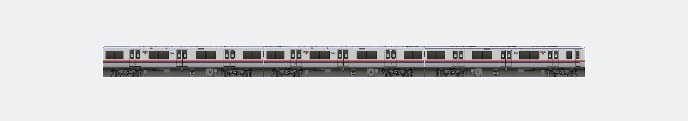
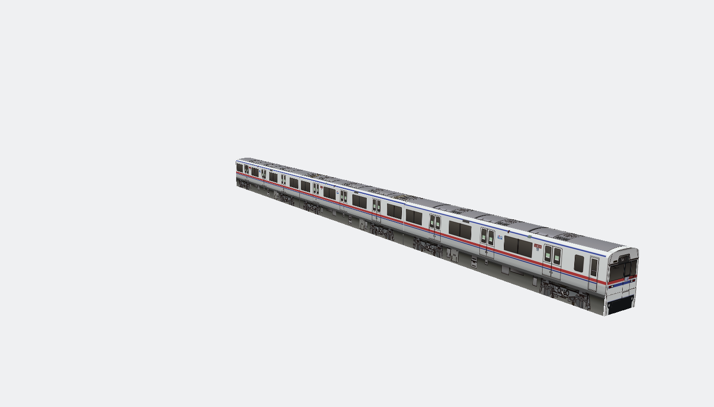
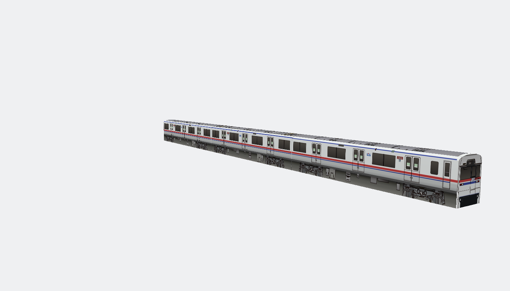

1. 京成3400形 keisei-3400
映射线路：京成本線（未映射）
返工：前脸红蓝带按实车重组：3408 前脸红上蓝下移到风挡下方腰线高度（红带 y 1.91–1.74、蓝带 y 1.68–1.53，车灯随蓝带走）、车号“3408”移入红带内右侧、行先板居中横跨红带；图纸把风挡画低约 1.2 m（玻璃底 y 0.68，实车约 1.95），风挡玻璃块整体上移（像素/形状/尺寸不变，仅行位置上移），按“与实车照片一致”规则执行；前蓝带底比侧蓝带底低约 0.11 m（图纸前蓝带画得比侧面高，灯高所限，顶已对齐）。仅改 car3.glb（blob 68c42b4c…，旧 e9b3da74…），car1/car2/consist 未变。提交 a866bf2b。skill 升 1.2.31（前脸色带顺序/位置与实车相反 +1 行）。


